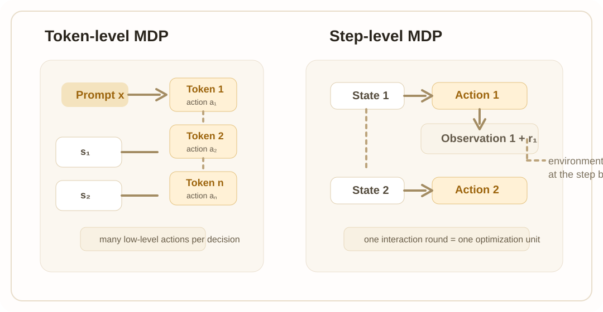
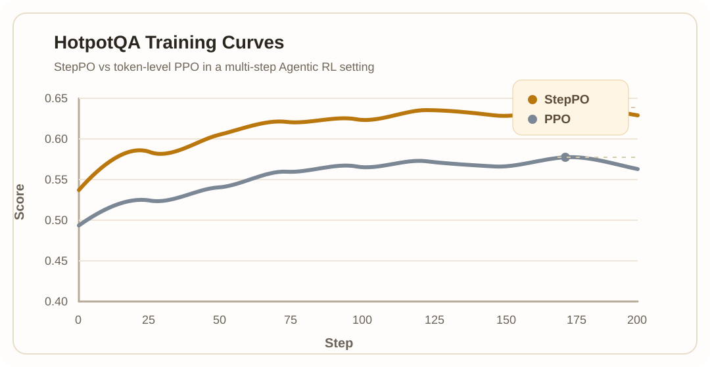

StepPO（Step-Aligned Policy Optimization）是一篇面向 Agentic Reinforcement Learning 的方法立场论文， 它不是只在传统 PPO 上做局部技巧修补，而是从建模单位出发，重新定义多轮 Agent 应该如何被表示、回放与优化。 论文指出：当训练目标从单轮回答转向长程工具使用与环境交互时，token-centric 的 RL 抽象已经不再足够。
在这个视角下，StepPO 把一个 Agent 在某轮观察下作出的完整响应、工具调用与环境反馈， 统一视为一个 step。策略优化、优势传播、数据表示与训练系统都应围绕这个 step 单位保持一致， 这也是 “step-aligned” 的真正含义。
论文首先指出，当前 Agentic RL 的一个核心问题是粒度错位： 许多方法仍然沿用 token-level MDP，但信用分配却已经开始向 trajectory-level 演进。 这会导致决策单位、奖励传播单位与真实 Agent 行为单位彼此不一致。
对多轮 Agent 来说，一个重要决定通常体现为一次完整的“观察 → 响应 / 工具调用 → 环境反馈”闭环。 如果仍然只把单个 token 视作动作，那么高级决策会被切碎，环境转移也会被埋在长文本序列中， 训练信号很难稳定地对齐到真正起作用的中间步骤。
| 方法 | MDP 建模粒度 | 信用分配粒度 |
|---|---|---|
| PPO | Token-level | Token-level |
| Reinforce++ | Token-level | Token-level |
| GRPO | Token-level | Trajectory-level |
| RLOO | Token-level | Trajectory-level |
| LightningRL | Step-level | Trajectory-level |
| StepPO 对齐 | Step-level | Step-level |
StepPO 不是单点优化，而是一套从理论到工程的协同视角。论文把 Agentic RL 的迁移总结为四个相互配合的层面， 它们共同决定 step-level 优化能否真正落地。
从 token-level MDP 转向 step-level MDP，把完整交互轮次作为状态转移与动作定义的基本单位。
从 message / text replay 转向 step-native data，保留每一步的 prompt ids、response ids、reward 与 metadata。
从 token-level 或 trajectory-level 的不匹配传播，转向直接绑定 interaction step 的 reward propagation。
围绕 step-native replay、异步采样、共享前缀复用和网关化数据管理来搭建可扩展训练系统。

StepPO 特别强调，理论上的 step-level MDP 只有在数据层也被如实记录时才成立。
如果 rollout 先被解码成文本，再重新 tokenize 回去做训练，就可能出现
Tok(Detok(z)) != z 的 retokenization drift。
这会破坏 rollout 与 replay 的一致性，进而削弱 step-aligned learning 的稳定性。
论文认为，StepPO 真正成立不仅是算法问题，也是系统问题。 只要训练仍然围绕扁平文本、同步执行和单一内部 Agent 组织，就很难把 step-level 优化稳定地扩展到真实工作负载。
每个 step 保存 prompt ids、response ids、reward 和元信息，保持 token realization 与语义边界同时可用。
通过 gateway 吸收异构 Agent 轨迹，再由 datapool 管理奖励、报告、版本与筛选元数据。
长轨迹中大量上下文前缀重复，step-native 存储允许系统做 shared-prefix reuse 与 prefix-tree merging。
rollout engine、training engine、gateway 与 datapool 解耦运行，在保证新鲜度的同时提升吞吐。
StepPO 也可以被看作一条研究路线的总结。 Agent-R1 更强调从训练视角解决 token-space consistency 与多轮 Agent MDP 抽象， Claw-R1 则进一步从数据管理与中间件视角，推动 gateway-centered ingestion、datapool 管理与 heterogeneous-agent support。 StepPO 把这两条线索合并成一个更清晰的 step-aligned 叙事。
论文在 HotpotQA 的多步 Agentic RL 设置下，对 StepPO 与 token-level PPO 做了受控对比。 两者使用相同的 base model、数据、rollout pipeline 与大体训练配置，主要差异在于优化粒度。

结果趋势非常明确：StepPO 在训练的大多数阶段都稳定高于 token-level PPO， 并在中后期维持更好的平台表现。论文据此认为，当任务需要多步证据搜集、工具交互和中间决策时， 让 PPO 与 interaction step 对齐，会得到比 token-level credit propagation 更有效的学习信号。
如果这个页面或论文观点对你的研究有帮助，可以引用：
StepPO 与 Agent-R1、 Claw-R1 共同构成了 USTC-AGI 在 Agentic RL 上从训练抽象到系统基础设施的连续研究脉络。